from matplotlib import pyplot as plt
import numpy as np
import pandas as pdData Visualisation
The Importance of Data Visualisation
A Motivation for Graphical Work
An important element of quantitative research is in visualising data. Frequently this is done in one way and two-way graphs, where the distribution of a variable is plotted, or relationships between two or more variables are plotted in two-dimensional space. There are a number of reasons why we will want to spend time thinking about, and more importantly, actually doing, data visualisation. Among others, displaying information graphically can:
- Help us catch things in our code that we may have been hard to capture in other ways
- Let us summarise key information for our readers in a more effective way than using tables or narrative text
- Provide a key descriptive or descriptive set of facts that draws readers to our work
When for our own consumption (as in point 1 above) we are likely happy to just be able to generate graphs relatively quickly and using default behaviours of the languages in which we are working. But when we are generating graphs that will be a part of a research project, we will likely want to invest slightly more time in ensuring that graphs look good and are doing their job effectively. As we will see below, often with relatively little work a basic plot can be converted into a plot that is both clearer and potentially more visually appealing, and additionally, built upon to provide additional information. In this class we will explore examples with Python, though the general principles we examine will be relevant for other languages too.
While the most important element of a graph is that it correctly portrays the information you wish to communicate, a well done plot can both look good, and quite simply portray more information than can be portrayed in a similar space in other ways. Many well known examples of good data visualisation exist. An early example is the pioneering work of sociologist W.E.B. Dubois, who in the early 1900s produced hand-drawn graphs describing demographic and socio-economic conditions of African Americans (see example below).
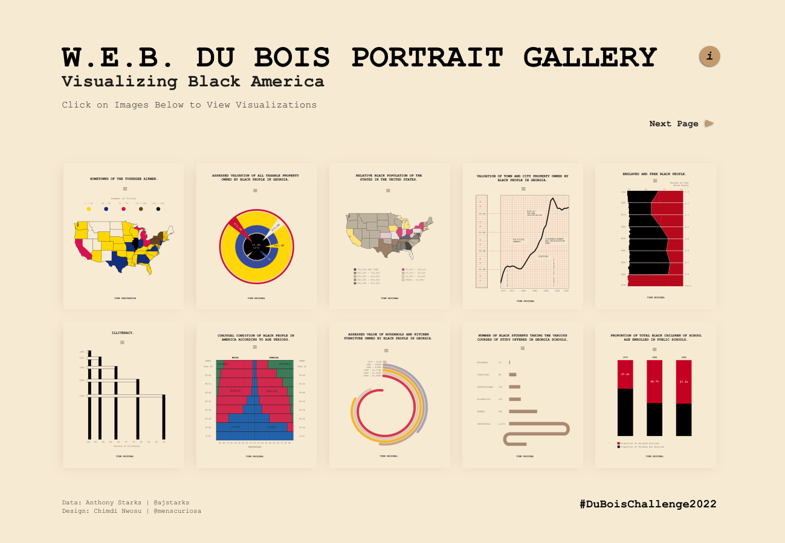
There are a number of comprehensive guides on best principles in graphing. These include the books below. The first is the classic reference on data visualisation, while the latter is a more recent treatment, specifically focused on R and the ggplot2 library.
Tufte (2001): “The Visual Display of Quantitative Information”
Healy (2019): “Data Visualization: A Practical Introduction”
Graphical Work in Economics Papers
Within economics papers, graphs can serve multiple purposes, from purely descriptive patterns of key variables which go beyond basic summary statistics (think for example, of histograms or kernel densities), to graphs which seek to use descriptive trends or summaries to foreshadow research designs. Some of the most effective graphs in economics papers are those which manage to effectively communicate the empirical design in a visual way before getting into too much complex modelling. Consisder a number of effective examples of such graphs below.
While these graphs come from very different styles of paper and research designs, what they have in common is that they provide a quite visually compelling way to lay out key descriptive statistics, while at the same time allowing readers to visually “see” that some treatment effect likely exists. Of course, the nature of any such graph will depend on your context, and not all papers allow for such visual presentations do, but putting some thought into how descriptive statistics can be used to tell a story, or to at least act as a prelude to a story, can have big returns in how a paper can be communicated and understood.
Basic Graph Examples
Some Graph Types and Procedures
To begin, we will return to the examples laid out in the Programming overview section of this course. Given that we did not spend time on this at the beginning of the course, we will start from scratch with these examples. Each language has its own routines and libraries for plotting data (and feel free to refer back to the Programming Languages section of this site for more information on your specific language of interest. In Python one of the most frequently used modules given its broad availability of graph types and flexible syntax is the is the pyplot module from the matplotlib library If you have not previously installed this module, you can do so using pip install matplotlib, and then we will import the pyplot submodule as plt, so we can explore the functionality of this module. We will additionally load numpy and pandas as standard:
pyplot maps pairs of points in the coordinate axis and places them on a graph. For example, let’s consider a very simple case where is a sequence of integers between -5 and 5. This can be generated as below:
x = np.array(range(-5, 6))
xarray([-5, -4, -3, -2, -1, 0, 1, 2, 3, 4, 5])Now consider the variable \(y=x^2\):
y = x**2
yarray([25, 16, 9, 4, 1, 0, 1, 4, 9, 16, 25])We will store these two objects as a data frame, by creating a dictionary containing x and y (though we could proceed to plot without first storing our data as a data frame):
Data = pd.DataFrame({'x': x, 'y': y})The relevant function in pyplot is plot, which by default generates a line plot, making reasonable decisions for axes and labelling. Unless you have an IDE which automatically displays your plot in a plot panel, you should use the show method from pyplot to display your plot:
plt.plot(Data['x'], Data['y'])
plt.show()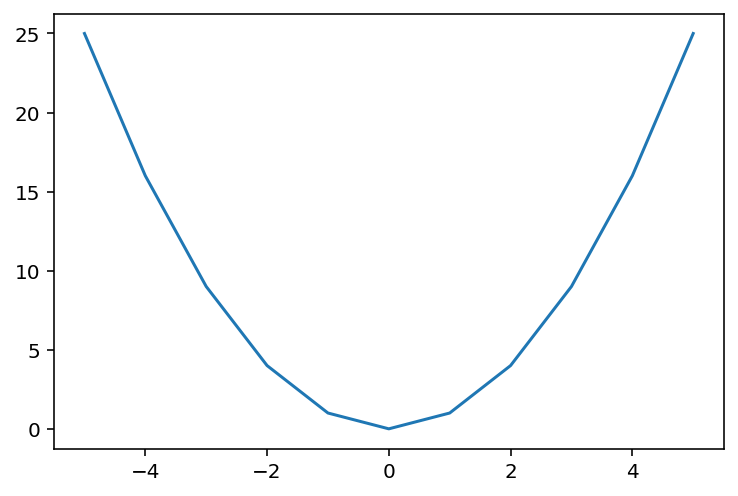
If you wish to change the default behaviour of plot you can do so with a range of options. For example, in order to change the plot to a scatter plot, we can set the linestyle to "" and the markers to points:
plt.plot(Data['x'], Data['y'], linestyle = "", marker = ".")
plt.show()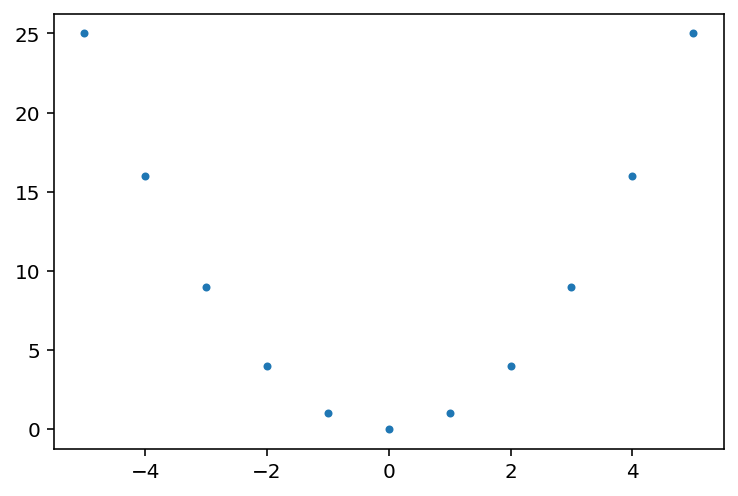
In general, we can view these plots as all being built on top of a canvas, where our desired plots can be generated in a step by step way. For example, if we now wish to add labels to x-axes and y-axes, which is something we should always do to improve stand-alone readability of the plot, we can simply build on top of what we already did:
plt.plot(Data['x'], Data['y'], linestyle = "", marker = "o")
plt.grid(True)
plt.ylabel('y')
plt.xlabel('x^2')
plt.xlabel(r'$x^2$')
plt.show()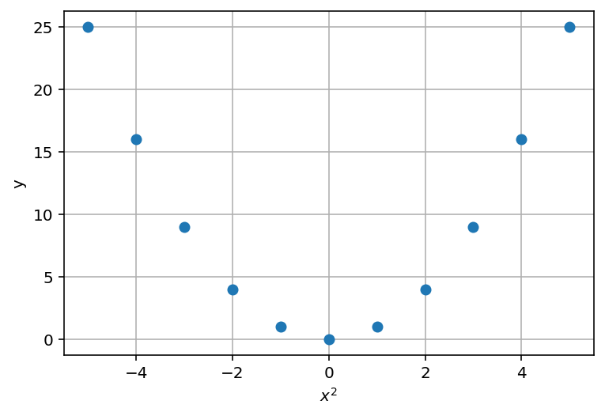
There are many ways to further customise graphics in Python, and also a range of plots available as part of matplotlib’s plotting library for use relatively simply. A list of plot types can be found here. To explore slightly more, we will return to the data we used in the first section of the course from Mroz (1987). This includes one-way plots such as histograms where we simply examine the distribution of a single variable (hence the “one-way” name):
import wooldridge
mroz = wooldridge.data('mroz')
plt.hist(mroz['wage'])
plt.show()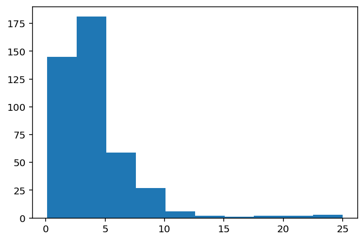
If the above plot was for us to display in a paper we would certainly want to further optimise output, for example by attaching axes titles. We can also display plots as groups of subplots. Below we see an example where we define axes to allow us control over a series of 4 plots.
fig, axes = plt.subplots(2, 2, figsize=(8, 6))
ax1 = axes[0, 0]
ax2 = axes[0, 1]
ax3 = axes[1, 0]
ax4 = axes[1, 1]
ax1.hist(mroz['wage'])
ax1.set_title('Hourly Wage')
ax2.hist(mroz['hours'])
ax2.set_title('Hours Worked')
ax3.hist(mroz['educ'])
ax3.set_title('Years of Education')
ax4.hist(mroz['age'])
ax4.set_title('Years of Experience')
#Prevents subplot titles overlaying
plt.tight_layout()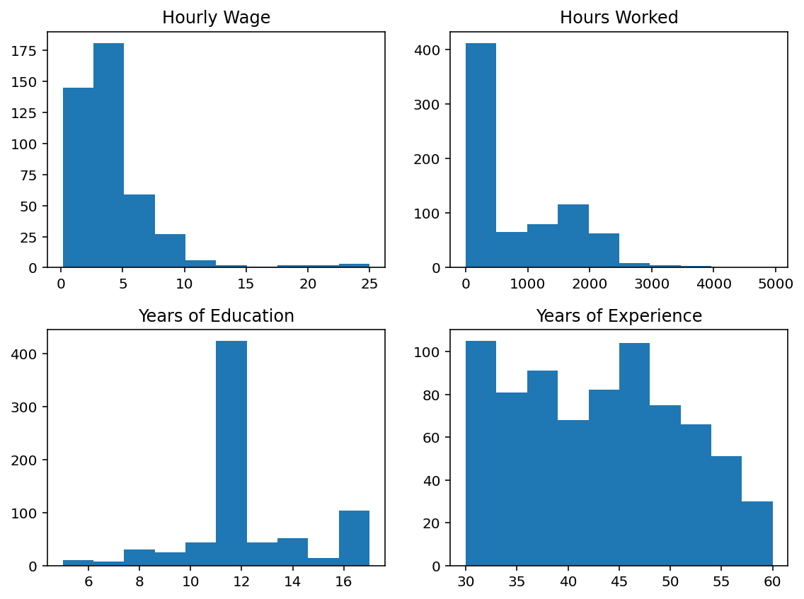
Again, depending on what these plots are for we may wish to further optimise them. In general, matplotlib provides a series of base graph types and these can be useful to build up other graphs. However, another widely-used package to allow for further customisation of graphs in Python is the seaborn library, which can be installed from pip. Seaborn provides a wide range of graphs which can be generated, and also has a series of more optimal baseline settings. It also allows for simple interaction with other colour palettes which we may prefer if we wish to optimise our graph. Below we will load seaborn, and examine one particular colour palette which we can easily use:
plt.clf()
import seaborn as sns
sns.color_palette("viridis", as_cmap=True)viridis
![viridis colormap]( "viridis")
under
bad
over
<Figure size 432x288 with 0 Axes>Now, if instead of a histogram we wish to generate kernel density plots, this can be done directly from seaborn:
sns.kdeplot(mroz['wage'], fill=True)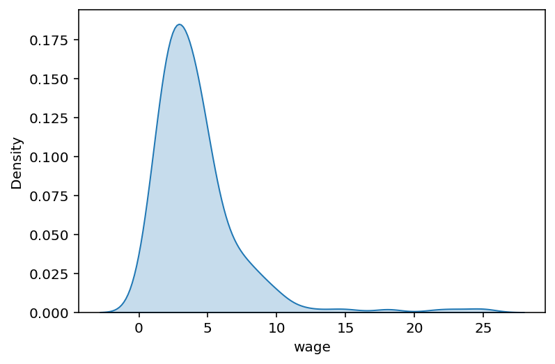
What’s more, we can use the functionality of matplotlib’s canvas to add on top of seaborn plots. Below we will generate this same plot, and then use the plt environment to add a different x-axis title:
sns.kdeplot(mroz['wage'], fill=True)
plt.xlabel("Hourly Wage (USD)")Text(0.5, 0, 'Hourly Wage (USD)')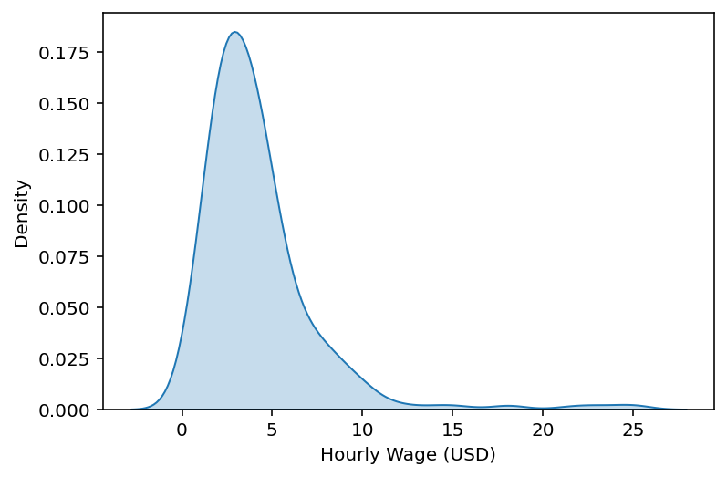
Both seaborn and pyplot allow for a large range of two-way plots. For example, if we wish to simply generate a scatter plot we may be happy to do it simply in pyplot, as below:
plt.scatter(mroz['exper'], mroz['lwage'])
plt.grid(True)
plt.ylabel("ln(wage)")
plt.xlabel("Experience")
plt.show()
plt.close()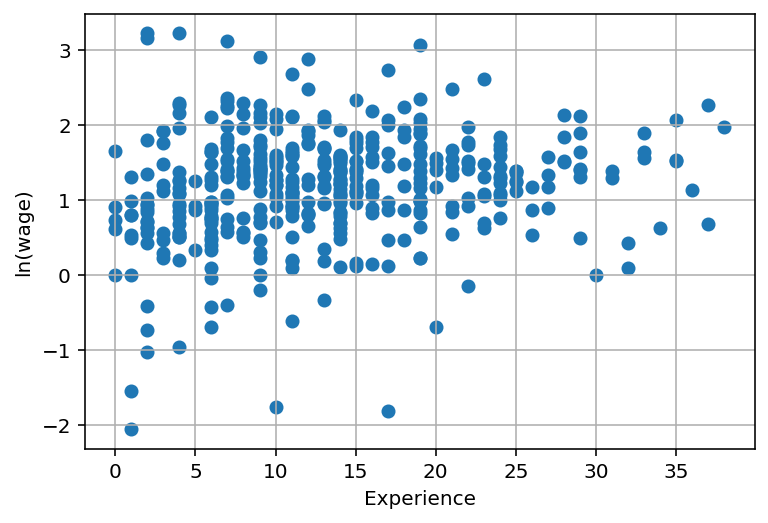
But if we wish to overlay our scatter plot with some sort of regression line (for example a lowess fit below), we may find that a more specialised seaborn plot is easier for us to use:
plt.clf()
sns.regplot(data = mroz, x = 'exper', y = 'lwage', lowess=True, marker='x')
plt.ylabel("ln(wage)")
plt.xlabel("Experience")Text(0.5, 0, 'Experience')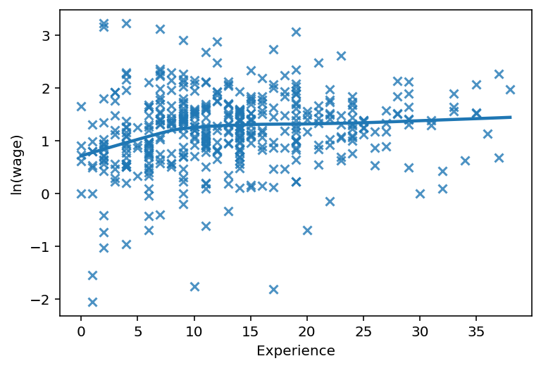
In general there is a huge range of plot types in seaborn and we will not explore these at length. We will see a number of examples in tutorial presentations in the week ahead, and I would highly recommend that you explore the online support for seaborn and pyplot, linked above, (or the graphics library for the language you are using) to get a feel for the full diversity of plots available. In general, it is quite simple to move from basic ideas like scatter plots to more complete visualisations, such as weighted scatter plots with varying hues (see below). While this is just a single example, it provides us with an idea of how easy it is to generate plots that look reasonable in just a few lines of code.
cmap = sns.color_palette("viridis", as_cmap=True)
mroz = mroz.rename(columns={"educ": "Education", "hours": "Hours Worked"})
sns.relplot(data=mroz,x="exper", y="wage",hue="Education",
size="Hours Worked",palette=cmap)
plt.grid(True)
plt.ylabel("Wage per hour (USD)")
plt.xlabel("Experience")
note_text = "Note: Data is provided by Mroz (1987)."
plt.annotate(note_text, xy=(0.2, -0.2), xycoords="axes fraction", fontsize=10, color="gray", ha="center")
plt.show()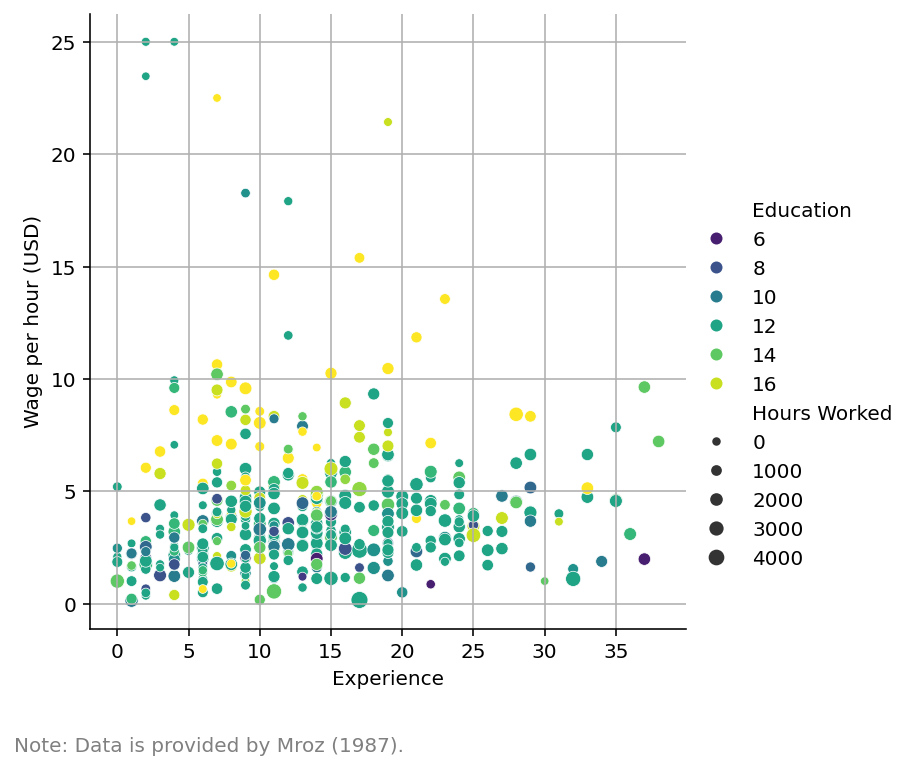
A Small Aside on Printing
When you export graphs for saving, there are multiple formats which can be used. These include raster formats such as png, jpeg, or vector formats such as eps and pdf. For our work, we will nearly always want to use vector formats. Vector graphics formats scale effectively with zooming, and for this reason when we include graphics in a pdf file, it is preferable to always include vector formats rather than raster formats which become pixelated when observing at different levels of zoom than the size in which they were originally created. In general, for papers journals will always request vector formats, and in your code I would encourage you to always use vector formats unless there is some specific reason to use raster formats. Further details related to these issues can be found at the following link: https://www.geeksforgeeks.org/vector-vs-raster-graphics/.
Testing your knowledge
To test your knowledge and work on automating processes, consider the following example:
Open some dataset and generate a histogram of each numerical variable. To do so, you will likely wish to loop through all variables and confirm that they are numerical variables before plotting a histogram, or simply generate a list of all numerical variables and loop through this, within each loop plotting the variable. For a further challenge, you may wish to first test if the variable has more than two levels prior to generating a histogram. Save each file on disk to examine output.
A Worked Example of Something More Complex
To examine some of the details of plotting in more depth we will consider a worked example. We will discuss this example at length in class. In particular, here we want to explore the mapping capabilities of Python, and want to build up a map documenting three particular elements. This map seeks to visualise the exposure to wildfires, and contains three elements:
A layer showing the distance to the nearest fire (map colours)
A layer showing wind directions (black arrows)
A layer showing the location and size of fires (orange circles)
In general each of the languages that we are working with has good mapping capabilities. There are computational tools specifically for mapping if you wish to be working in very advanced mapping techniques such as qgis and arqgis, but as you will see below Python’s native mapping tools can do quite a lot by themselves.
We will discuss this example at length in class, and work through the code line by line. Data for you to follow along is available here. In this link, I simply provide the data, README and a reduced set of code which replicates the key elements of what we do below. The code below is more comprehensive, as it builds up our understanding of the graphs in a piece-by-piece way.
# makeMaps.py damiancclarke yyyy-mm-dd:2022-12-01
#---|----1----|----2----|----3----|----4----|----5----|----6----|----7----|----8
#
# This file makes maps documenting wind bearings crossed with fire intensities
# and combines these maps into gifs. This can all be controlled using different
# month spans and time periods in section 3. This is run using Python 3.8.10,
# but should work with any version of Python 3 provided dependencies are install-
# ed. All dependencies are listed in section [0] of the code.
#
# To run this code, the location of materials on the users' machine should be s-
# et (as "base") on line 45.
#
# This code can be run using the following at the command line:
# python3 -W ignore makeMaps.py
#
# The -W ignore flag is because error messages are thrown when no fires occur in
# a given moment and the map of fires is empty. If -W ignore is not used these
# messages will simply be printed on the screen.
################################################################################
### [0] Imports
################################################################################
import numpy as np
import pandas as pd
import os
import shapefile as shp
import matplotlib.pyplot as plt
import seaborn as sns
import geopandas as gpd
import pyreadr
from windrose import WindroseAxes
from PIL import Image
import glob
from datetime import date, timedelta
import matplotlib.colors as colors
from matplotlib.patches import Patch
sns.set(style="whitegrid", palette="pastel", color_codes=True)
sns.mpl.rc("figure", figsize=(10,6))
base = "/home/dcc213/trabajo/Teaching/Exeter/ResearchMethods-I/visualisation/"
################################################################################
### [1] First explore a basic map with random data
################################################################################
sf = gpd.read_file(base+"data/comunas.shp")
sf['cvar']=np.random.normal(0,1,len(sf))
sf = sf.to_crs('epsg:4326')
fig, ax = plt.subplots(figsize=(10, 10))
sf.plot(ax=ax,column='cvar',cmap="viridis",legend=True,alpha=0.7)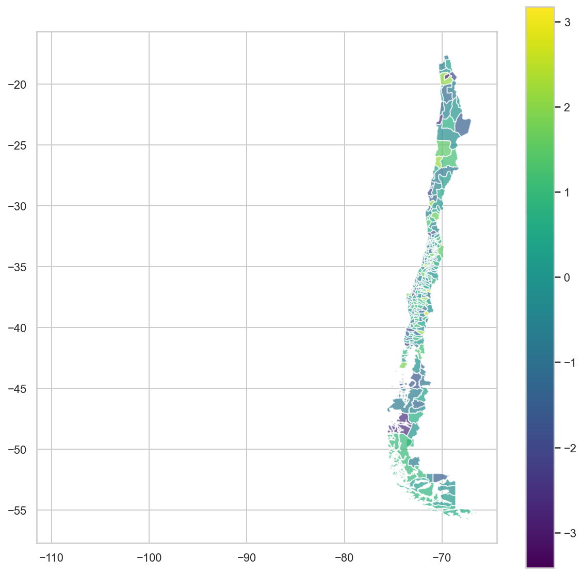
################################################################################
### [2] Import data for a particular moment (fires at 2021-01-02, 15:00)
################################################################################
# Read in fires data
sdate = '2021-01-02 15:00:00'
fires = pd.read_stata(base+"data/fires2021.dta")
fires = fires.loc[fires['Date']==sdate]
fires.CUT_2018 = fires['CUT_2018'].astype('int64')
# Store as a geo pandas data frame for maps below
gdf = gpd.GeoDataFrame(fires, geometry=gpd.points_from_xy(fires.lo1, fires.la1))
# Read in wind data
wind = pd.read_stata(base+"data/u10_v10_2021.dta")
wind = wind.loc[wind['Date']==sdate]
wind.CUT_2018 = wind['CUT_2018'].astype('int64')
wind.Long = wind['Long'].astype('float64')
wind.Lat = wind['Lat'].astype('float64')
wind.viento_u10 = wind['viento_u10'].astype('float64')
wind.viento_v10 = wind['viento_v10'].astype('float64')
# Merge wind and fire: at each municipality what is the wind direction?
# Information on calculating wind direction here:
# http://colaweb.gmu.edu/dev/clim301/lectures/wind/wind-uv
both = pd.merge(fires,wind,on="CUT_2018", how="left")
both['windangle'] = np.mod(270-np.arctan2(both.viento_u10,both.viento_v10)*180/np.pi,360)
both['windspeed'] = np.sqrt(np.square(both.viento_u10)+np.square(both.viento_v10))
both.head()
# Check wind directions
ax = WindroseAxes.from_ax()
ax.bar(both['windangle'], both['windspeed'], normed=True, opening=0.8, edgecolor="white")
ax.set_legend()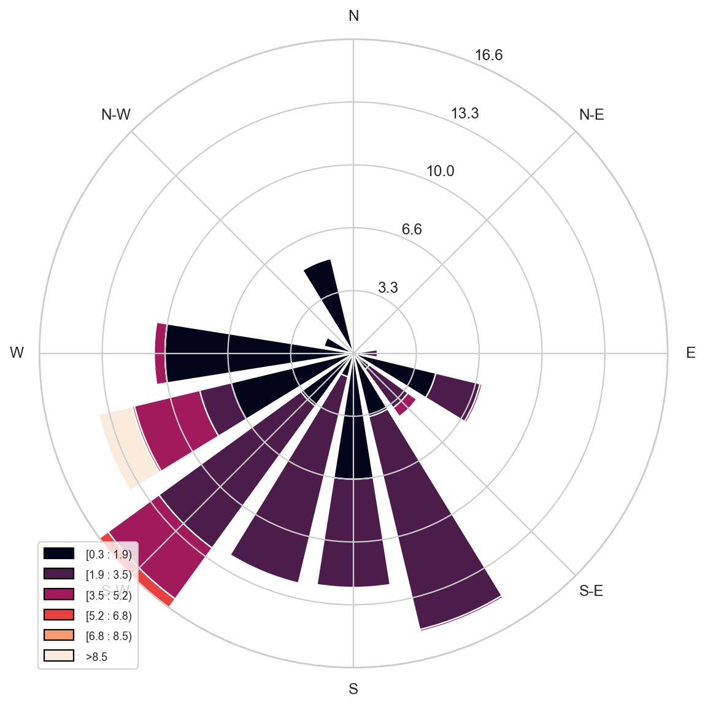
################################################################################
### [3] Generate mean distance to fire by municipality and merge with map codes
################################################################################
print(both.head())
distance = both[['Distancia','CUT_2018']].groupby('CUT_2018').mean()
sf['CUT_2018']=sf.cod_comuna
sf = pd.merge(sf,distance,on="CUT_2018",how="left") la1 lo1 Superficie beta_grado gamma_grado CUT_2018 \
0 -41.467222 -72.895833 0.01 81.276543 261.251465 10101
1 -41.467222 -72.895833 0.01 99.646782 279.271759 10106
2 -41.467222 -72.895833 0.01 156.026993 335.968292 10109
3 -41.467222 -72.895833 0.01 29.648378 209.494522 10102
4 -41.467222 -72.895833 0.01 163.370178 343.282928 10105
duration Date_x Distancia Long Lat \
0 1.55 2021-01-02 15:00:00 3492.854736 -72.9 -41.4
1 1.55 2021-01-02 15:00:00 47915.296875 -73.4 -41.3
2 1.55 2021-01-02 15:00:00 18231.113281 -72.9 -41.3
3 1.55 2021-01-02 15:00:00 39030.343750 -72.9 -41.4
4 1.55 2021-01-02 15:00:00 38455.136719 -73.0 -41.1
Date_y viento_v10 Comuna viento_u10 windangle \
0 2021-01-02 15:00:00 3.391291 Puerto Montt 0.738311 257.717907
1 2021-01-02 15:00:00 3.594998 Los Muermos 1.002831 254.413469
2 2021-01-02 15:00:00 3.907526 Puerto Varas 1.241126 252.378870
3 2021-01-02 15:00:00 3.391291 Calbuco 0.738311 257.717907
4 2021-01-02 15:00:00 4.986442 Frutillar 1.558664 252.641778
windspeed
0 3.470729
1 3.732249
2 4.099896
3 3.470729
4 5.224370 ################################################################################
### [4] Build up map with each element
################################################################################
#Use matplotlib's quiver graph to show wind direction and speed
fig, ax = plt.subplots(figsize=(4, 6))
plt.quiver(wind.Long,wind.Lat,wind.viento_u10,wind.viento_v10,
alpha=0.6, width=0.006)
# Generate map with distance to fire
fig, ax = plt.subplots(figsize=(10, 10))
sf.plot(ax=ax,column='Distancia',cmap="viridis",legend=True,alpha=0.7)
# Add fires and wind directions on top
scale=3
f = gdf.plot(ax=ax, color='orange', edgecolor='black',
alpha=0.1,markersize=(fires.Superficie**0.9)*scale)
plt.quiver(wind.Long,wind.Lat,wind.viento_u10,wind.viento_v10,
alpha=0.6, width=0.006)
# Add colour map showing distances on side, work out what to do with no fires
fig, ax = plt.subplots(figsize=(10, 10))
sf.plot(ax=ax,column='Distancia',cmap="viridis",
missing_kwds={
"color": "lightgrey",
"edgecolor": "grey",
"label": "Missing values",
},
legend=True,alpha=0.7)
scale=3
f = gdf.plot(ax=ax, color='orange', edgecolor='black',
alpha=0.1,markersize=(fires.Superficie**0.9)*scale)
plt.quiver(wind.Long,wind.Lat,wind.viento_u10,wind.viento_v10,
alpha=0.6, width=0.006)
# Focus on particular area
lat=[-76,-68]
lon=[-42,-30]
ax.set_xlim(lat[0],lat[1])
ax.set_ylim(lon[0],lon[1]) 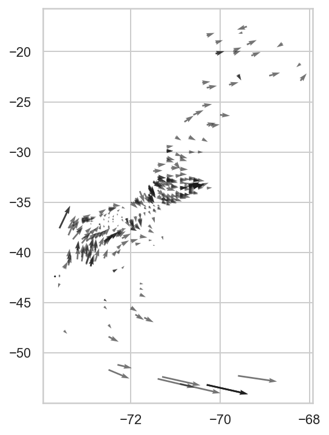
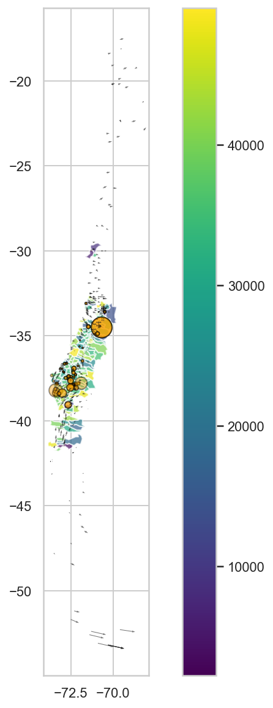
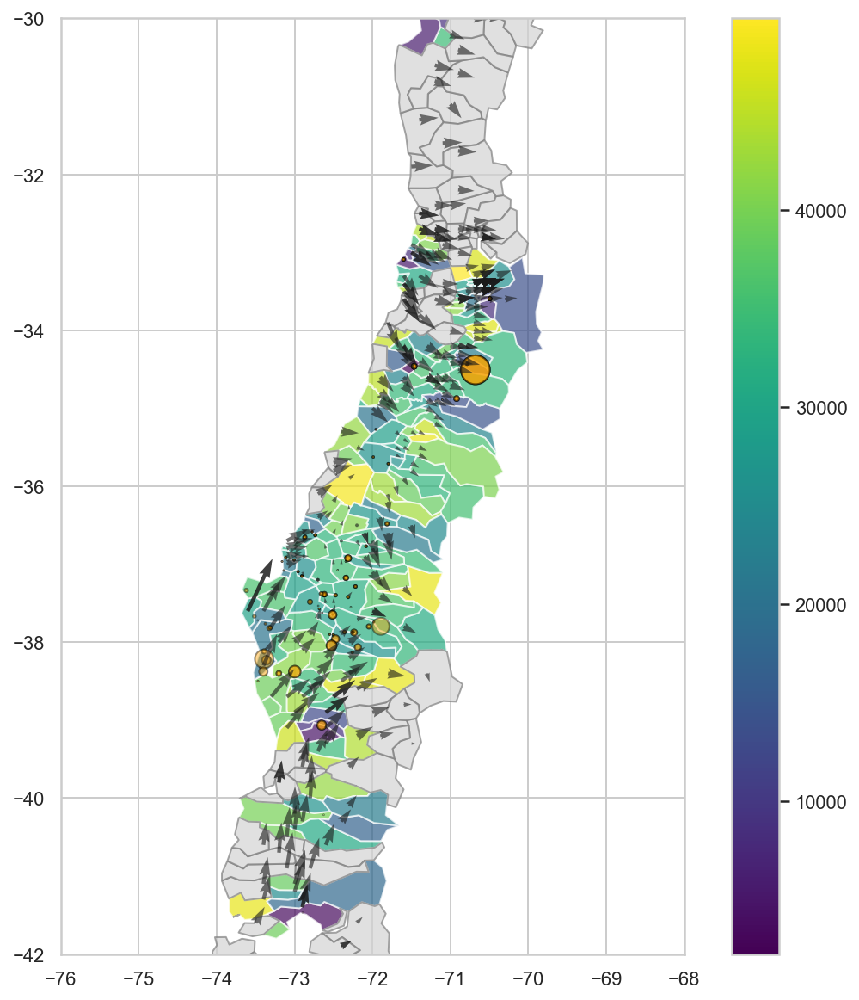
################################################################################
### [5] Bring this all together and loop over dates to make a gif
################################################################################
fires = pd.read_stata(base+"data/fires2021.dta")
fires.CUT_2018 = fires['CUT_2018'].astype('int64')
wind = pd.read_stata(base+"data/u10_v10_2021.dta")
wind.CUT_2018 = wind['CUT_2018'].astype('int64')
wind.Long = wind['Long'].astype('float64')
wind.Lat = wind['Lat'].astype('float64')
wind.viento_u10 = wind['viento_u10'].astype('float64')
wind.viento_v10 = wind['viento_v10'].astype('float64')
sf = gpd.read_file(base+"data/comunas.shp")
sf = sf.to_crs('epsg:4326')
sf['CUT_2018']=sf.cod_comuna
lat=[-76,-68]
lon=[-42,-30]
imgs = []
for day in range(1,32):
sday = str(day).zfill(2)
sdate = '2021-01-'+sday+' 15:00:00'
print(sdate)
firesD = fires.loc[fires['Date']==sdate]
windD = wind.loc[wind['Date']==sdate]
gdf = gpd.GeoDataFrame(firesD, geometry=gpd.points_from_xy(firesD.lo1, firesD.la1))
both = pd.merge(firesD,windD,on="CUT_2018", how="left")
both['windangle'] = np.mod(270-np.arctan2(both.viento_u10,both.viento_v10)*180/np.pi,360)
both['windspeed'] = np.sqrt(np.square(both.viento_u10)+np.square(both.viento_v10))
distance = both[['Distancia','CUT_2018']].groupby('CUT_2018').mean()
sfD = pd.merge(sf,distance,on="CUT_2018",how="left")
fig, ax = plt.subplots(figsize=(10, 10))
sfD.plot(ax=ax,column='Distancia',cmap="viridis",vmin=0, vmax=50000,
missing_kwds={
"color": "lightgrey",
"edgecolor": "grey",
"label": "Missing values",
},
legend=True,alpha=0.7)
scale=3
f = gdf.plot(ax=ax, color='orange', edgecolor='black',
alpha=0.1,markersize=(firesD.Superficie**0.9)*scale)
ax.set_title(sdate)
plt.quiver(windD.Long,windD.Lat,windD.viento_u10,windD.viento_v10,
alpha=0.6, width=0.006)
ax.set_xlim(lat[0],lat[1])
ax.set_ylim(lon[0],lon[1])
fname = base+'/results/f'+sdate+'.png'
plt.savefig(fname,bbox_inches='tight')
imgs.append(fname)
plt.clf()
frames = []
for i in imgs:
new_frame = Image.open(i)
frames.append(new_frame)
fn_save = base+'results/fires.gif'
frames[0].save(fn_save, format='GIF', append_images=frames[1:],
save_all=True, duration=300, loop=0)2021-01-01 15:00:00
2021-01-02 15:00:00
2021-01-03 15:00:00
2021-01-04 15:00:00
2021-01-05 15:00:00
2021-01-06 15:00:00
2021-01-07 15:00:00
2021-01-08 15:00:00
2021-01-09 15:00:00
2021-01-10 15:00:00
2021-01-11 15:00:00
2021-01-12 15:00:00
2021-01-13 15:00:00
2021-01-14 15:00:00
2021-01-15 15:00:00
2021-01-16 15:00:00
2021-01-17 15:00:00
2021-01-18 15:00:00
2021-01-19 15:00:00
2021-01-20 15:00:00
2021-01-21 15:00:00/tmp/ipykernel_30419/1443131998.py:39: RuntimeWarning:
More than 20 figures have been opened. Figures created through the pyplot interface (`matplotlib.pyplot.figure`) are retained until explicitly closed and may consume too much memory. (To control this warning, see the rcParam `figure.max_open_warning`). Consider using `matplotlib.pyplot.close()`.
2021-01-22 15:00:00
2021-01-23 15:00:00
2021-01-24 15:00:00
2021-01-25 15:00:00
2021-01-26 15:00:00
2021-01-27 15:00:00
2021-01-28 15:00:00
2021-01-29 15:00:00
2021-01-30 15:00:00
2021-01-31 15:00:00<Figure size 720x720 with 0 Axes><Figure size 720x720 with 0 Axes><Figure size 720x720 with 0 Axes><Figure size 720x720 with 0 Axes><Figure size 720x720 with 0 Axes><Figure size 720x720 with 0 Axes><Figure size 720x720 with 0 Axes><Figure size 720x720 with 0 Axes><Figure size 720x720 with 0 Axes><Figure size 720x720 with 0 Axes><Figure size 720x720 with 0 Axes><Figure size 720x720 with 0 Axes><Figure size 720x720 with 0 Axes><Figure size 720x720 with 0 Axes><Figure size 720x720 with 0 Axes><Figure size 720x720 with 0 Axes><Figure size 720x720 with 0 Axes><Figure size 720x720 with 0 Axes><Figure size 720x720 with 0 Axes><Figure size 720x720 with 0 Axes><Figure size 720x720 with 0 Axes><Figure size 720x720 with 0 Axes><Figure size 720x720 with 0 Axes><Figure size 720x720 with 0 Axes><Figure size 720x720 with 0 Axes><Figure size 720x720 with 0 Axes><Figure size 720x720 with 0 Axes><Figure size 720x720 with 0 Axes><Figure size 720x720 with 0 Axes><Figure size 720x720 with 0 Axes><Figure size 720x720 with 0 Axes>